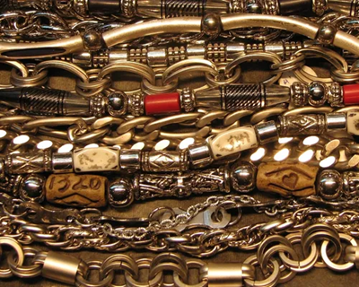
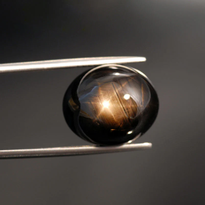
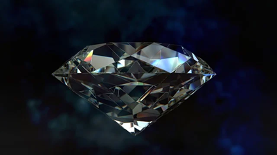

Nouvelles:
Promotions printemps 2026!
Publié le
Le printemps est enfin arrivé, et pour célébrer la saison du renouveau, Diamant Classique est heureux d’annoncer ses promotions spéciales du printemps 2026. Pendant une durée limitée, plusieurs de nos bijoux les plus populaires sont offerts à prix réduit.
Conseils pour choisir le bijou parfait
Publié le
Choisir un bijou peut parfois sembler difficile, surtout lorsqu’il s’agit d’un cadeau important. Chez Classic Diamonds, nous croyons qu’un bijou doit refléter la personnalité et le style de la personne qui le porte.

Nouvelle collection estivale 2026
Publié le
Avec l’arrivée des beaux jours, Diamant Classique est fier de dévoiler sa toute nouvelle collection estivale 2026. Inspirée par la lumière du soleil et les couleurs naturelles, cette collection met en valeur des bijoux élégants et lumineux, parfaits pour la saison.
Découvrez notre magasin
Publié le
Dans notre boutique de bijoux, chaque pièce est soigneusement sélectionnée pour refléter l’élégance et le raffinement. Bagues délicates, colliers scintillants, bracelets modernes et boucles d’oreilles intemporelles composent notre collection.

Le diamant oublié
Publié le
Dans une petite vitrine poussiéreuse de la boutique Diamant Classique, un bijou reposait à l’écart des autres. Il n’était ni le plus brillant, ni le plus imposant. Pourtant, personne ne pouvait détourner les yeux en le regardant trop longtemps.

Le secret du saphir noir
Publié le
Dans une petite vitrine poussiéreuse de la boutique Diamant Classique, un bijou attirait parfois les regards… mais jamais longtemps. C’était un saphir noir, monté sur une bague ancienne, dont la pierre semblait absorber la lumière plutôt que la refléter.